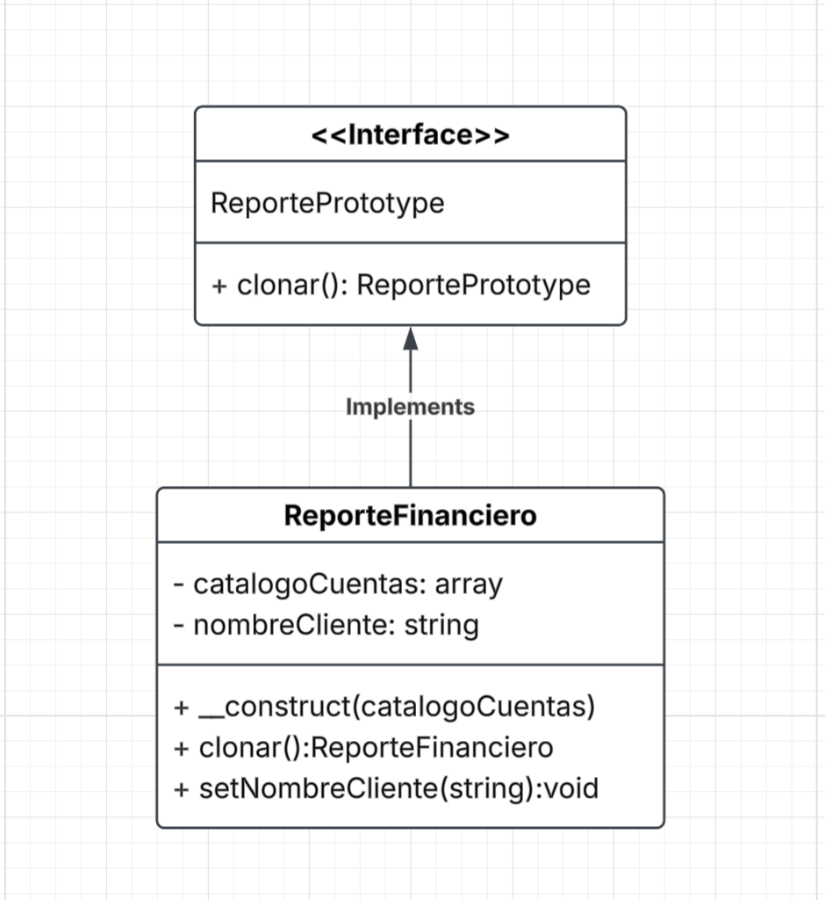

Prototype
Patrón de diseño creacional
Video explicativoProblema
¿Qué duele antes del patrón?
Imaginemos que una empresa utiliza un sistema para generar reportes financieros. No obstante, construir cada uno de ellos es un proceso costoso y que toma bastante tiempo. Cada vez que se crea un reporte desde cero, el sistema debe realizar varias tareas antes de dejarlo listo, como consultar la base de datos para obtener la información del catálogo de cuentas, cargar la plantilla de estilos y calcular cómo se agrupan los datos según el tipo de cliente.
Ahora bien, si se desea generar diez reportes para diferentes clientes, el trabajo se vuelve repetitivo, ya que la mayor parte del proceso es igual, lo único que cambia es cierta información del cliente. Como consecuencia, crear cada reporte desde cero significa repetir el procedimiento una y otra vez, aunque nueve de los diez reportes sean prácticamente solo copias del primero y no aporten mayor valor.
Además, este problema no es solo de repetición de procesos, la lógica para construir un reporte completo termina mezclada con el código que solo necesita generar una copia para otro cliente, lo que hace que el sistema sea más difícil de mantener y comprender.
Solución
Para solucionar este problema se usa el patrón Prototype, el cual, según (GeeksforGeeks, 2025), se utiliza cuando una operación es costosa y requiere demasiado tiempo. En lugar de construir cada reporte desde cero, se crea un reporte base y los demás se generan a partir de este. De esta forma, las tareas más pesadas para dejar listo el reporte solo se realizan una vez.
De esta manera, cuando se necesita un reporte para otro cliente, simplemente se clona el reporte base y se modifican únicamente los datos que varían. Así, la misma estructura puede reutilizarse tantas veces como sea necesario, evitando repetir todo el proceso de construcción. Así pues, para que esto sea posible,
se define una interfaz que declara el método clonar(), sin necesidad de conocer la clase concreta del objeto que se desea copiar.
Diagrama

Fuente. Elaboración propia.
Código
interface ReportePrototype {
public function clonar(): ReportePrototype;
}
class ReporteFinanciero implements ReportePrototype {
private array $catalogoCuentas;
private string $nombreCliente;
public function __construct(array $catalogoCuentas) {
$this->catalogoCuentas = $catalogoCuentas;
}
public function clonar(): ReportePrototype {
return clone $this;
}
public function __clone(): void {
$this->catalogoCuentas = array_map(fn($c) => clone $c, $this->catalogoCuentas);
$this->nombreCliente = "";
}
public function setNombreCliente(string $nombre): void {
$this->nombreCliente = $nombre;
}
}
$base = new ReporteFinanciero($catalogo);
$reporteBancoX = $base->clonar();
$reporteBancoX->setNombreCliente("Banco X");
// Aquí solo hay una referencia (catalogoCuentas), no "muchas referencias que cambian" como se menciona en la siguiente sección, por eso el deep copy sigue siendo manejable
¿Cuándo usarlo?
Cuándo SÍ
Según Java Design Patterns (s.f.), cuándo sí aplica:
- Cuando crear un objeto es costoso y solo se necesitan pocas combinaciones de datos o configuraciones: se vuelve más práctico crear objetos base (prototipos) y hacer copias mediante clonación, en lugar de construirlos desde cero y configurarlos cada vez con los datos necesarios.
-
Cuando el tipo de objeto se decide en tiempo de ejecución: evita que el cliente dependa de una clase específica o tenga
que crear objetos mediante instrucciones directas como
new NombreConcreto(). De esta forma, el código se vuelve más flexible y fácil de adapta a diferentes situaciones.
Cuándo NO
De acuerdo con Spring Framework Guru (2019), cuándo no aplica:
- Cuando el objeto es simple y rápido de crear: si no representa un costo importante en tiempo o recursos, utilizar un constructor es suficiente, y usar el patrón Prototype no representa una ventaja real.
- Cuando solo se necesita una única instancia del objeto: no existe la necesidad de crear variaciones del mismo objeto. En este caso, aplicar el patrón Prototype no aporta beneficios y únicamente agrega complejidad innecesaria al diseño.
- Cuando el objeto tiene muchas referencias a otros objetos que pueden cambiar: una copia superficial puede hacer que el objeto original y la copia compartan las mismas referencias. Sin embargo, si estas referencias se modifican, ambas copias pueden verse afectadas y producir resultados inesperados. Por esta razón, es necesario realizar una copia profunda (deep copy), que es más difícil y delicada de implementar y mantener.
Ejemplo real
En PHP, el patrón Prototype ya viene incorporado en el lenguaje. Para crear una copia de un objeto se utiliza la palabra clave
clone, que llama automáticamente al método
__clone() cuando existe. Si no se ha definido ese método,
PHP realiza por defecto una copia superficial
de las propiedades del objeto (The PHP Group, s.f.).
Un caso práctico se puede observar en el framework Laravel, implementado en su Eloquent Builder. Esta clase implementa el método
__clone() para que, cuando se clone un objeto
builder, también se clone el query builder interno que contiene. De esta manera, la copia tiene su propio estado y no comparte
información con el objeto
original.
Gracias a este comportamiento, un desarrollador puede crear una consulta base y clonarla para generar otra con pequeñas variantes sin reconstruirla desde cero. Esto reutiliza el código, facilita el mantenimiento y reduce el riesgo de modificar por error la consulta original (Merchant, 2024).
Referencias
- GeeksforGeeks. (2025, 3 de enero) Prototype design pattern. https://www.geeksforgeeks.org/prototype-design-pattern/
- Java Design Patterns. (s.f.). Prototype. https://java-design-patterns.com/patterns/prototype/
- Merchant, A. (2024, 17 de mayo). Cloning queries in Laravel. https://www.amitmerchant.com/cloning-queries-in-laravel/
- Spring Framework Guru. (2019, 29 de mayo). Prototype pattern. springframework.guru/.../prototype-pattern
- The PHP Group. (s.f.). Object cloning. PHP Manual. https://www.php.net/manual/en/language.oop5.cloning.php